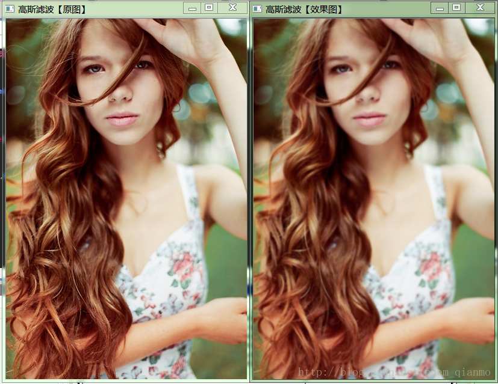
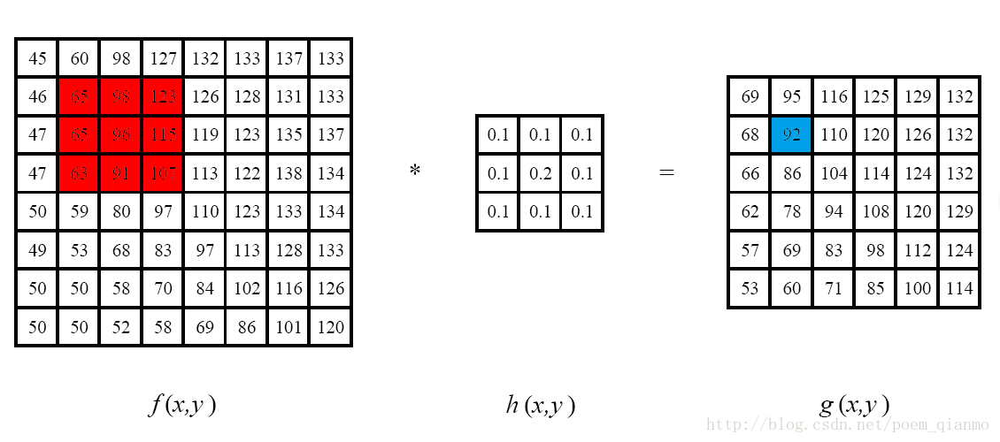
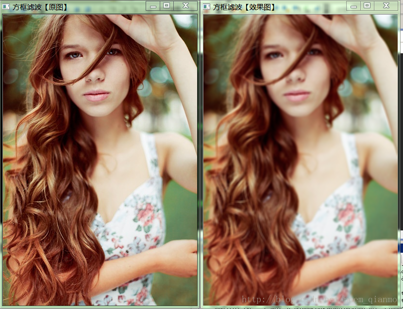
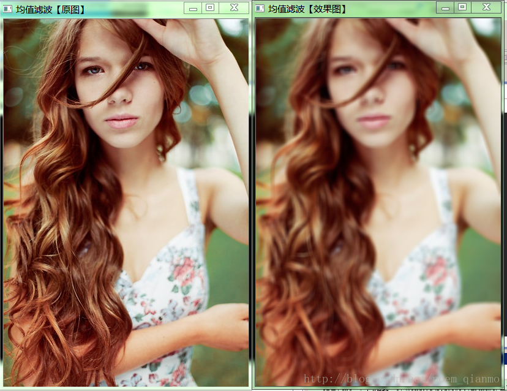

教程5：线性领域滤波：方框滤波、均值滤波与高斯滤波
教程5：线性领域滤波：方框滤波、均值滤波与高斯滤波一、相关概念介绍1.1 平滑处理1.2 图像滤波1.3 线性滤波器1.4 滤波与模糊1.5 邻域算子与线性邻域滤波1.5.1 方框滤波1.5.2 均值滤波1.5.3 高斯滤波二、OpenCV源码剖析2.1 boxFilter函数源码解析2.2 FilterEngine类解析——OpenCV图像滤波核心引擎2.3 opencv中size类解析2.4 opencv中blur函数解析2.5 opencv中GaussianBlur函数源码剖析三. 浅出——线性滤波函数快速上手3.1 boxFilter函数——方框滤波3.2 blur函数——均值滤波3.3 GaussianBlur函数——高斯滤波3.4 综合示例程序
首先上一张效果图：

一、相关概念介绍
1.1 平滑处理
“平滑处理“（smoothing）也称“模糊处理”（bluring），是一项简单且使用频率很高的图像处理方法。平滑处理的用途有很多，最常见的是用来减少图像上的噪点或者失真。
1.2 图像滤波
图像滤波，即在尽量保留图像细节特征的条件下对目标图像的噪声进行抑制，是图像预处理中不可缺少的操作，其处理效果的好坏将直接影响到后续图像处理和分析的有效性和可靠性。消除图像中的噪声成分叫作图像的平滑化或滤波操作。信号或图像的能量大部分集中在幅度谱的低频和中频段是很常见的，而在较高频段，感兴趣的信息经常被噪声淹没。因此一个能降低高频成分幅度的滤波器就能够减弱噪声的影响。图像滤波的目的有两个：一是抽出对象的特征作为图像识别的特征模式；另一个是为适应图像处理的要求，消除图像数字化时所混入的噪声。而对滤波处理的要求也有两条:一是不能损坏图像的轮廓及边缘等重要信息;二是使图像清晰视觉效果好。
平滑滤波是低频增强的空间域滤波技术。它的目的有两类：一类是模糊；另一类是消除噪音。空间域的平滑滤波一般采用简单平均法进行，就是求邻近像元点的平均亮度值。邻域的大小与平滑的效果直接相关，邻域越大平滑的效果越好，但邻域过大，平滑会使边缘信息损失的越大，从而使输出的图像变得模糊，因此需合理选择邻域的大小。
关于滤波器，一种形象的比喻法是：我们可以把滤波器想象成一个包含加权系数的窗口，当使用这个滤波器平滑处理图像时，就把这个窗口放到图像之上，透过这个窗口来看我们得到的图像。滤波器的种类有很多， 在新版本的OpenCV中，提供了如下五种常用的图像平滑处理操作方法，且他们分别被封装在单独的函数中，使用起来非常方便：
- 方框滤波——boxblur函数
- 均值滤波（邻域平均滤波）——blur函数
- 高斯滤波——GaussianBlur函数
- 中值滤波——medianBlur函数
- 双边滤波——bilateralFilter函数
今天要讲解的是作为线性滤波的方框滤波，均值滤波和高斯滤波。两种非线性滤波操作——中值滤波和双边滤波，我们留待下次讲解。
1.3 线性滤波器
线性滤波器：线性滤波器经常用于剔除输入信号中不想要的频率或者从许多频率中选择一个想要的频率。几种常见的线性滤波器：
- 允许低频率通过的低通滤波器。
- 允许高频率通过的高通滤波器。
- 允许一定范围频率通过的带通滤波器。
- 阻止一定范围频率通过并且允许其它频率通过的带阻滤波器。
- 允许所有频率通过、仅仅改变相位关系的全通滤波器。
- 阻止一个狭窄频率范围通过的特殊带阻滤波器，陷波滤波器（Band-stop filter）。
1.4 滤波与模糊
关于滤波和模糊，大家往往在初次接触的时候会弄混淆，“一会儿说滤波，一会儿又说模糊，什么玩意儿啊”。没关系，在这里，我们就来辨别一下，为大家扫清障碍。我们上文已经提到过，滤波是将信号中特定波段频率滤除的操作，是抑制和防止干扰的一项重要措施。
为了方便说明，就拿我们经常用的高斯滤波来作例子吧。我们知道，滤波可分低通滤波和高通滤波两种。而高斯滤波是指用高斯函数作为滤波函数的滤波操作，至于是不是模糊，要看是高斯低通还是高斯高通，低通就是模糊，高通就是锐化。
其实说白了是很简单的，对吧：高斯滤波是指用高斯函数作为滤波函数的滤波操作。高斯模糊就是高斯低通滤波。
1.5 邻域算子与线性邻域滤波
邻域算子（局部算子）是利用给定像素周围的像素值的决定此像素的最终输出值的一种算子。而线性邻域滤波是一种常用的邻域算子，像素的输出值取决于输入像素的加权和，具体过程如下图。
邻域算子除了用于局部色调调整以外，还可以用于图像滤波，实现图像的平滑和锐化，图像边缘增强或者图像噪声的去除。本篇文章，我们介绍的主角是线性邻域滤波算子，即用不同的权重去结合一个小邻域内的像素，来得到应有的处理效果。

图注：邻域滤波（卷积）：左边图像与中间图像的卷积产生右边图像。目标图像中蓝色标记的像素是利用原图像中红色标记的像素计算得到的。线性滤波处理的输出像素值 是输入像素值的加权和：
其中的加权和为 ，我们称其为“核”，滤波器的加权系数，即滤波器的“滤波系数”。上面的式子可以简单写作：
其中表示输入像素值，表示加权系统"核"，表示输出像素值。在新版本的OpenCV中，提供了三种常用的线性滤波操作，他们分别被封装在单独的函数中，使用起来非常方便，分别是方框滤波(bloxblur)、均值滤波(blur)、高斯滤波(GaussianBlur)。下面对他们一一介绍。
1.5.1 方框滤波
方框滤波（box Filter）**被封装在一个名为boxblur的函数中，即boxblur函数的作用是使用方框滤波器（box filter）来模糊一张图片，从src输入，从dst输出。 C++: void boxFilter(InputArray src,OutputArray dst, int ddepth, Size ksize, Point anchor=Point(-1,-1), boolnormalize=true, int borderType=BORDER_DEFAULT )
- 第一个参数，InputArray类型的src，输入图像，即源图像，填Mat类的对象即可。该函数对通道是独立处理的，且可以处理任意通道数的图片，但需要注意，待处理的图片深度应该为CV_8U, CV_16U, CV_16S, CV_32F 以及 CV_64F之一。
- 第二个参数，OutputArray类型的dst，即目标图像，需要和源图片有一样的尺寸和类型。
- 第三个参数，int类型的ddepth，输出图像的深度，-1代表使用原图深度，即src.depth()。
- 第四个参数，Size类型（对Size类型稍后有讲解）的ksize，内核的大小。一般这样写Size( w,h )来表示内核的大小( 其中，w 为像素宽度， h为像素高度)。Size（3,3）就表示3x3的核大小，Size（5,5）就表示5x5的核大小
- 第五个参数，Point类型的anchor，表示锚点（即被平滑的那个点），注意他有默认值Point(-1,-1)。如果这个点坐标是负值的话，就表示取核的中心为锚点，所以默认值Point(-1,-1)表示这个锚点在核的中心。
- 第六个参数，bool类型的normalize，默认值为true，一个标识符，表示内核是否被其区域归一化（normalized）了。
- 第七个参数，int类型的borderType，用于推断图像外部像素的某种边界模式。有默认值BORDER_DEFAULT，我们一般不去管它。
boxFilter（）函数方框滤波所用的核为：
其中， 当normalize=true时，当normalize=false时。
1.5.2 均值滤波
均值滤波是最简单的一种滤波操作，输出图像的每一个像素是核窗口内输入图像对应像素的像素的平均值( 所有像素加权系数相等)，其实说白了它就是归一化后的方框滤波。我们在下文进行源码剖析时会发现，blur函数内部中其实就是调用了一下boxFilter。下面开始讲均值滤波的内容吧。
均值滤波是典型的线性滤波算法，主要方法为邻域平均法，即用一片图像区域的各个像素的均值来代替原图像中的各个像素值。一般需要在图像上对目标像素给出一个模板（内核），该模板包括了其周围的临近像素（比如以目标像素为中心的周围8（3x3-1）个像素，构成一个滤波模板，即去掉目标像素本身）。再用模板中的全体像素的平均值来代替原来像素值。即对待处理的当前像素点，选择一个模板，该模板由其近邻的若干像素组成，求模板中所有像素的均值，再把该均值赋予当前像素点，作为处理后图像在该点上的灰度值。
均值滤波本身存在着固有的缺陷，即它不能很好地保护图像细节，在图像去噪的同时也破坏了图像的细节部分，从而使图像变得模糊，不能很好地去除噪声点。在opencv中使用均值滤波，就是使用blur函数，对输入图像src进行均值滤波后用dst输出。
1.5.3 高斯滤波
高斯滤波是一种线性平滑滤波，适用于消除高斯噪声，广泛应用于图像处理的减噪过程。通俗的讲，高斯滤波就是对整幅图像进行加权平均的过程，每一个像素点的值，都由其本身和邻域内的其他像素值经过加权平均后得到。高斯滤波的具体操作是：用一个模板（或称卷积、掩模）扫描图像中的每一个像素，用模板确定的邻域内像素的加权平均灰度值去替代模板中心像素点的值。大家常常说高斯滤波最有用的滤波操作，虽然它用起来，效率往往不是最高的。
高斯模糊技术生成的图像，其视觉效果就像是经过一个半透明屏幕在观察图像，这与镜头焦外成像效果散景以及普通照明阴影中的效果都明显不同。高斯平滑也用于计算机视觉算法中的预先处理阶段，以增强图像在不同比例大小下的图像效果（参见尺度空间表示以及尺度空间实现）。从数学的角度来看，图像的高斯模糊过程就是图像与正态分布做卷积。由于正态分布又叫作高斯分布，所以这项技术就叫作高斯模糊。
图像与圆形方框模糊做卷积将会生成更加精确的焦外成像效果。由于高斯函数的傅立叶变换是另外一个高斯函数，所以高斯模糊对于图像来说就是一个低通滤波操作。高斯滤波器是一类根据高斯函数的形状来选择权值的线性平滑滤波器。高斯平滑滤波器对于抑制服从正态分布的噪声非常有效。一维零均值高斯函数为：
其中，高斯分布参数决定了高斯函数的宽度，以于图像处理来说，常用二维零均值离散高斯函数作平滑滤波器。二维高斯函数为：

在opencv中，GaussianBlur函数的作用是用高斯滤波器来模糊一张图片，对输入的图像src进行高斯滤波后用dst输出。它将源图像和指定的高斯核函数做卷积运算，并且支持就地过滤（In-placefiltering）。
void GaussianBlur(InputArray src,OutputArray dst, Size ksize, double sigmaX, double sigmaY=0, intborderType=BORDER_DEFAULT )
- 第一个参数，InputArray类型的src，输入图像，即源图像，填Mat类的对象即可。它可以是单独的任意通道数的图片，但需要注意，图片深度应该为CV_8U,CV_16U, CV_16S, CV_32F 以及 CV_64F之一。
- 第二个参数，OutputArray类型的dst，即目标图像，需要和源图片有一样的尺寸和类型。比如可以用Mat::Clone，以源图片为模板，来初始化得到如假包换的目标图。
- 第三个参数，Size类型的ksize高斯内核的大小。其中ksize.width和ksize.height可以不同，但他们都必须为正数和奇数。或者，它们可以是零的，它们都是由sigma计算而来。
- 第四个参数，double类型的sigmaX，表示高斯核函数在X方向的的标准偏差。
- 第五个参数，double类型的sigmaY，表示高斯核函数在Y方向的的标准偏差。若sigmaY为零，就将它设为sigmaX，如果sigmaX和sigmaY都是0，那么就由ksize.width和ksize.height计算出来。
- 为了结果的正确性着想，最好是把第三个参数Size，第四个参数sigmaX和第五个参数sigmaY全部指定到。
- 第六个参数，int类型的borderType，用于推断图像外部像素的某种边界模式。有默认值BORDER_DEFAULT，我们一般不去管它。
二、OpenCV源码剖析
这一部分中，将带领大家领略OpenCV的开源魅力，对OpenCV中本篇文章里讲解到线性滤波函数——boxFilter，blur和GaussianBlur函数以及周边的涉及到的源码进行适当的剖析。这样，我们就可以对 OpenCV有一个更加深刻的理解，成为一个高端大气的OpenCV使用者。
2.1 boxFilter函数源码解析
我们可以在OpenCV的安装路径的\sources\modules\imgproc\src下的smooth.cpp源文件的第711行找到boxFilter函数的源代码。对应于浅墨将OpenCV 2.4.8安装在D:\Program Files\opencv的路径下，那么，smooth.cpp文件就在D:\ProgramFiles\opencv\sources\modules\imgproc\src路径下。
x// 代码作用：进行box Filter滤波操作的函数 // 说明：以下代码为来自于计算机开源视觉库OpenCV的官方源代码 // OpenCV源代码版本：2.4.8 // 源码路径:\opencv\sources\modules\imgproc\src\smooth.cpp // 源文件中如下代码的起始行数：711行 void cv::boxFilter( InputArray _src,OutputArray _dst, int ddepth,Size ksize, Point anchor,bool normalize, int borderType) { Mat src = _src.getMat();//拷贝源图的形参Mat数据到临时变量，用于稍后的操作 int sdepth =src.depth(), cn = src.channels();//定义int型临时变量，代表源图深度的sdepth，源图通道的引用cn //处理ddepth小于零的情况 if( ddepth < 0 ) ddepth = sdepth; _dst.create( src.size(), CV_MAKETYPE(ddepth, cn) );//初始化目标图 Mat dst =_dst.getMat();//拷贝目标图的形参Mat数据到临时变量，用于稍后的操作 //处理 borderType不为 BORDER_CONSTANT 且normalize为真的情况 if( borderType != BORDER_CONSTANT && normalize ) { if( src.rows == 1 ) ksize.height = 1; if( src.cols == 1 ) ksize.width = 1; } //若之前有过HAVE_TEGRA_OPTIMIZATION优化选项的定义，则执行宏体中的tegra优化版函数并返回 if ( tegra::box(src, dst, ksize, anchor, normalize, borderType) ) return; //调用FilterEngine滤波引擎，正式开始滤波操作 Ptr<FilterEngine> f = createBoxFilter( src.type(), dst.type(), ksize, anchor,normalize, borderType ); f->apply( src, dst ); } 其中的Ptr是用来动态分配的对象的智能指针模板类。可以发现，函数的内部代码思路是很清晰的，先拷贝源图的形参Mat数据到临时变量，定义一些临时变量，在处理ddepth小于零的情况，接着处理 borderType不为 BORDER_CONSTANT 且normalize为真的情况，最终调用FilterEngine滤波引擎创建一个BoxFilter，正式开始滤波操作。这里的FilterEngine是OpenCV图像滤波功能的核心引擎，我们有必要详细剖析看其源代码。
2.2 FilterEngine类解析——OpenCV图像滤波核心引擎
FilterEngine类是OpenCV关于图像滤波的主力军类，OpenCV图像滤波功能的核心引擎。各种滤波函数比如blur， GaussianBlur，到头来其实是就是在函数末尾处定义了一个Ptr
这个类可以把几乎是所有的滤波操作施加到图像上。它包含了所有必要的中间缓存器。有很多和滤波相关的create系函数的返回值直接就是Ptr
Ptr
上面我们提到过了，其中的Ptr是用来动态分配的对象的智能指针模板类，而上面的尖括号里面的模板参数就是FilterEngine。使用FilterEngine类可以分块处理大量的图像，构建复杂的管线，其中就包含一些进行滤波阶段。如果我们需要使用预先定义好的的滤波操作，cv::filter2D(), cv::erode(),以及cv::dilate()，可以选择，他们不依赖于FilterEngine，自立自强，在自己函数体内部就实现了FilterEngine提供的功能。不像其他的诸如我们今天讲的blur系列函数，依赖于FilterEngine引擎。
xxxxxxxxxx//-----------------------------------【FilterEngine类中文注释版源代码】---------------------------- // 代码作用：FilterEngine类，OpenCV图像滤波功能的核心引擎 // 说明：以下代码为来自于计算机开源视觉库OpenCV的官方源代码 // OpenCV源代码版本：2.4.8 // 源码路径：…\opencv\sources\modules\imgproc\include\opencv2\imgproc\imgproc.hpp // 源文件中如下代码的起始行数：222行 // 中文注释by浅墨 //-------------------------------------------------------------------------------------------------------- class CV_EXPORTS FilterEngine { public: //默认构造函数 FilterEngine(); //完整的构造函数。 _filter2D 、_rowFilter 和 _columnFilter之一，必须为非空 FilterEngine(const Ptr<BaseFilter>& _filter2D, constPtr<BaseRowFilter>& _rowFilter, constPtr<BaseColumnFilter>& _columnFilter, int srcType, int dstType, intbufType, int_rowBorderType=BORDER_REPLICATE, int _columnBorderType=-1, const Scalar&_borderValue=Scalar()); //默认析构函数 virtual ~FilterEngine(); //重新初始化引擎。释放之前滤波器申请的内存。 void init(const Ptr<BaseFilter>& _filter2D, constPtr<BaseRowFilter>& _rowFilter, constPtr<BaseColumnFilter>& _columnFilter, int srcType, int dstType, intbufType, int_rowBorderType=BORDER_REPLICATE, int _columnBorderType=-1, const Scalar&_borderValue=Scalar()); //开始对指定了ROI区域和尺寸的图片进行滤波操作 virtual int start(Size wholeSize, Rect roi, int maxBufRows=-1); //开始对指定了ROI区域的图片进行滤波操作 virtual int start(const Mat& src, const Rect&srcRoi=Rect(0,0,-1,-1), bool isolated=false, intmaxBufRows=-1); //处理图像的下一个srcCount行（函数的第三个参数） virtual int proceed(const uchar* src, int srcStep, int srcCount, uchar* dst, intdstStep); //对图像指定的ROI区域进行滤波操作，若srcRoi=(0,0,-1,-1)，则对整个图像进行滤波操作 virtual void apply( const Mat& src, Mat& dst, const Rect&srcRoi=Rect(0,0,-1,-1), Point dstOfs=Point(0,0), bool isolated=false); //如果滤波器可分离，则返回true boolisSeparable() const { return (const BaseFilter*)filter2D == 0; } //返回输入和输出行数 int remainingInputRows() const; intremainingOutputRows() const; //一些成员参数定义 int srcType, dstType, bufType; Size ksize; Point anchor; int maxWidth; Size wholeSize; Rect roi; int dx1, dx2; int rowBorderType, columnBorderType; vector<int> borderTab; int borderElemSize; vector<uchar> ringBuf; vector<uchar> srcRow; vector<uchar> constBorderValue; vector<uchar> constBorderRow; int bufStep, startY, startY0, endY, rowCount, dstY; vector<uchar*> rows; Ptr<BaseFilter> filter2D; Ptr<BaseRowFilter> rowFilter; Ptr<BaseColumnFilter> columnFilter; }; 2.3 opencv中size类解析
size类型我们也讲一下，通过转到定义，我们可以d在\opencv\sources\modules\core\include\opencv2\core\core.hpp路径下，对应于浅墨的OpenCV安装路径，就是D:\ProgramFiles\opencv\sources\modules\core\include\opencv2\core\core.hpp下，找到其原型声明：
typedef Size_
typedef Size2i Size;
Size_ 是个模板类，在这里Size
xxxxxxxxxx// 代码作用：作为尺寸相关数据结构的Size_ 模板类 // 说明：以下代码为来自于计算机开源视觉库OpenCV的官方源代码 // OpenCV源代码版本：2.4.8 // 源码路径：…\opencv\sources\modules\core\include\opencv2\core\core.hpp // 源文件中如下代码的起始行数：816行 template<typename _Tp> class Size_ { public: typedef _Tp value_type; //不同的构造函数定义 Size_(); Size_(_Tp _width, _Tp _height); Size_(const Size_& sz); Size_(const CvSize& sz); Size_(const CvSize2D32f& sz); Size_(const Point_<_Tp>& pt); Size_& operator = (const Size_& sz); //区域(width*height) _Tp area() const; //转化另一种数据类型。 template<typename_Tp2> operator Size_<_Tp2>() const; //转换为旧式的OpenCV类型. operator CvSize() const; operator CvSize2D32f() const; _Tp width, height; //宽度和高度，常用属性 }; 可以看到Size_ 模板类的内部又是重载了一些构造函数以满足我们的需要，其中，我们用得最多的是如下这个构造函数 Size ( Tp _width, _Tp _height); 另外，代码末尾定义了模板类型的宽度和高度：Tp width, height; //宽度和高度
2.4 opencv中blur函数解析
void cv::blur(InputArray src, OutputArray dst, Size ksize, Point anchor, int borderType ) { //调用boxFilter函数进行处理 boxFilter( src, dst, -1, ksize, anchor, true, borderType ); }可以看到在blur函数内部就是调用了一个boxFilter函数，且第六个参数为true，即我们上文所说的normalize=true，即均值滤波是均一化后的方框滤波。
2.5 opencv中GaussianBlur函数源码剖析
void cv::GaussianBlur( InputArray _src,OutputArray _dst, Size ksize, double sigma1, doublesigma2, int borderType ) { //拷贝形参Mat数据到临时变量，用于稍后的操作 Mat src = _src.getMat(); _dst.create( src.size(), src.type() ); Mat dst =_dst.getMat(); //处理边界选项不为BORDER_CONSTANT时的情况 if( borderType != BORDER_CONSTANT ) { if( src.rows == 1 ) ksize.height = 1; if( src.cols == 1 ) ksize.width = 1; } //若ksize长宽都为1，将源图拷贝给目标图 if( ksize.width == 1 && ksize.height == 1 ) { src.copyTo(dst); return; } //若之前有过HAVE_TEGRA_OPTIMIZATION优化选项的定义，则执行宏体中的tegra优化版函数并返回 if(sigma1 == 0 && sigma2 == 0 && tegra::gaussian(src,dst, ksize, borderType)) return; //如果HAVE_IPP&& (IPP_VERSION_MAJOR >= 7为真，则执行宏体中语句 if(src.type() == CV_32FC1 && sigma1 == sigma2 &&ksize.width == ksize.height && sigma1 != 0.0 ) { IppiSize roi = {src.cols, src.rows}; int bufSize = 0; ippiFilterGaussGetBufferSize_32f_C1R(roi, ksize.width, &bufSize); AutoBuffer<uchar> buf(bufSize+128); if( ippiFilterGaussBorder_32f_C1R((const Ipp32f *)src.data,(int)src.step, (Ipp32f *)dst.data, (int)dst.step, roi,ksize.width, (Ipp32f)sigma1, (IppiBorderType)borderType, 0.0, alignPtr(&buf[0],32)) >= 0 ) return; } //调动滤波引擎，正式进行高斯滤波操作 Ptr<FilterEngine> f = createGaussianFilter( src.type(), ksize,sigma1, sigma2, borderType ); f->apply( src, dst ); } 今天的源友解析就到这里。相信大家对opencv中的线性滤波有较为详细的认识，已经可以试试几个函数有什么效果了。
三. 浅出——线性滤波函数快速上手
3.1 boxFilter函数——方框滤波
//载入原图 Mat image=imread("2.jpg"); //进行均值滤波操作 Mat out; boxFilter(image, out, -1,Size(5, 5)); 运行效果图（内核大小Size(5, 5)）：

3.2 blur函数——均值滤波
//载入原图 Mat image=imread("1.jpg"); //进行均值滤波操作 Mat out; blur(image, out, Size(7, 7)); 运行效果图（内核大小Size(7, 7)）：

3.3 GaussianBlur函数——高斯滤波
//载入原图 Mat image=imread("1.jpg"); //进行滤波操作 Mat out; GaussianBlur( image, out, Size( 5, 5 ), 0, 0 ); 3.4 综合示例程序
//-----------------------------------【头文件包含部分】--------------------------------------- // 描述：包含程序所依赖的头文件 //---------------------------------------------------------------------------------------------- //-----------------------------------【命名空间声明部分】--------------------------------------- // 描述：包含程序所使用的命名空间 //----------------------------------------------------------------------------------------------- using namespace std; using namespace cv; //-----------------------------------【全局变量声明部分】-------------------------------------- // 描述：全局变量声明 //----------------------------------------------------------------------------------------------- Mat g_srcImage,g_dstImage1,g_dstImage2,g_dstImage3;//存储图片的Mat类型 int g_nBoxFilterValue=3; //方框滤波参数值 int g_nMeanBlurValue=3; //均值滤波参数值 int g_nGaussianBlurValue=3; //高斯滤波参数值 //-----------------------------------【全局函数声明部分】-------------------------------------- // 描述：全局函数声明 //----------------------------------------------------------------------------------------------- //轨迹条的回调函数 static void on_BoxFilter(int, void *); //方框滤波 static void on_MeanBlur(int, void *); //均值滤波 static void on_GaussianBlur(int, void *); //高斯滤波 //-----------------------------------【main( )函数】-------------------------------------------- // 描述：控制台应用程序的入口函数，我们的程序从这里开始 //----------------------------------------------------------------------------------------------- int main( ) { //改变console字体颜色 system("color5E"); //载入原图 g_srcImage= imread( "1.jpg", 1 ); if(!g_srcImage.data ) { printf("Oh，no，读取srcImage错误~！\n"); return false; } //克隆原图到三个Mat类型中 g_dstImage1= g_srcImage.clone( ); g_dstImage2= g_srcImage.clone( ); g_dstImage3= g_srcImage.clone( ); //显示原图 namedWindow("【<0>原图窗口】", 1); imshow("【<0>原图窗口】",g_srcImage); //=================【<1>方框滤波】================== //创建窗口 namedWindow("【<1>方框滤波】", 1); //创建轨迹条 createTrackbar("内核值：", "【<1>方框滤波】",&g_nBoxFilterValue, 40,on_BoxFilter ); on_MeanBlur(g_nBoxFilterValue,0); imshow("【<1>方框滤波】", g_dstImage1); //================================================ //=================【<2>均值滤波】================== //创建窗口 namedWindow("【<2>均值滤波】", 1); //创建轨迹条 createTrackbar("内核值：", "【<2>均值滤波】",&g_nMeanBlurValue, 40,on_MeanBlur ); on_MeanBlur(g_nMeanBlurValue,0); //================================================ //=================【<3>高斯滤波】===================== //创建窗口 namedWindow("【<3>高斯滤波】", 1); //创建轨迹条 createTrackbar("内核值：", "【<3>高斯滤波】",&g_nGaussianBlurValue, 40,on_GaussianBlur ); on_GaussianBlur(g_nGaussianBlurValue,0); //================================================ //输出一些帮助信息 cout<<endl<<"\t嗯。好了，请调整滚动条观察图像效果~\n\n" <<"\t按下“q”键时，程序退出~!\n" <<"\n\n\t\t\t\tby浅墨"; //按下“q”键时，程序退出 while(char(waitKey(1))!= 'q') {} return 0; } //-----------------------------【on_BoxFilter( )函数】------------------------------------ // 描述：方框滤波操作的回调函数 //----------------------------------------------------------------------------------------------- static void on_BoxFilter(int, void *) { //方框滤波操作 boxFilter(g_srcImage, g_dstImage1, -1,Size( g_nBoxFilterValue+1, g_nBoxFilterValue+1)); //显示窗口 imshow("【<1>方框滤波】", g_dstImage1); } //-----------------------------【on_MeanBlur( )函数】------------------------------------ // 描述：均值滤波操作的回调函数 //----------------------------------------------------------------------------------------------- static void on_MeanBlur(int, void *) { //均值滤波操作 blur(g_srcImage, g_dstImage2, Size( g_nMeanBlurValue+1, g_nMeanBlurValue+1),Point(-1,-1)); //显示窗口 imshow("【<2>均值滤波】", g_dstImage2); } //-----------------------------【on_GaussianBlur( )函数】------------------------------------ // 描述：高斯滤波操作的回调函数 //----------------------------------------------------------------------------------------------- static void on_GaussianBlur(int, void *) { //高斯滤波操作 GaussianBlur(g_srcImage, g_dstImage3, Size( g_nGaussianBlurValue*2+1,g_nGaussianBlurValue*2+1 ), 0, 0); //显示窗口 imshow("【<3>高斯滤波】", g_dstImage3); }